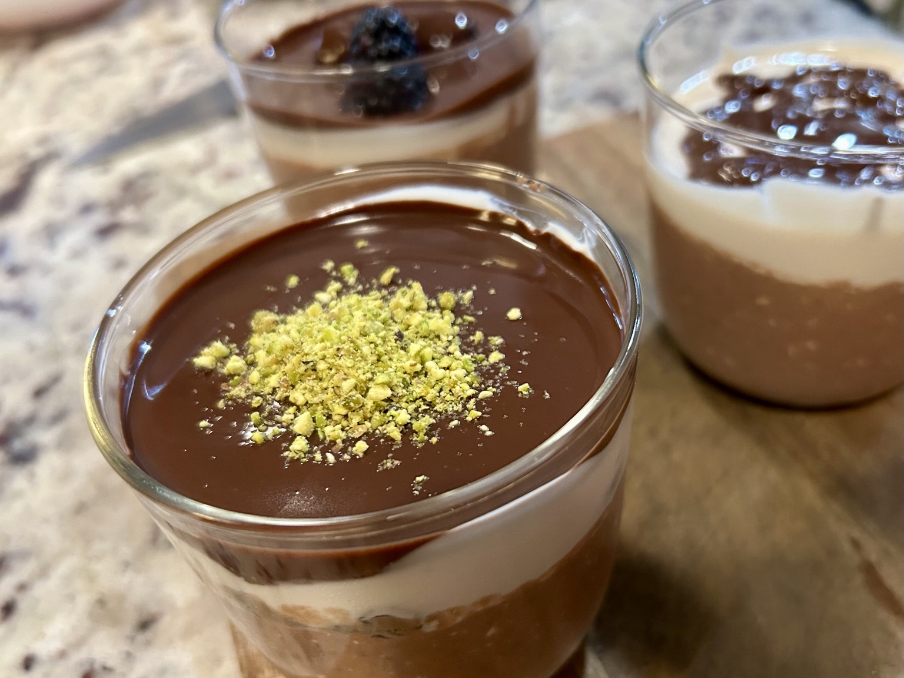
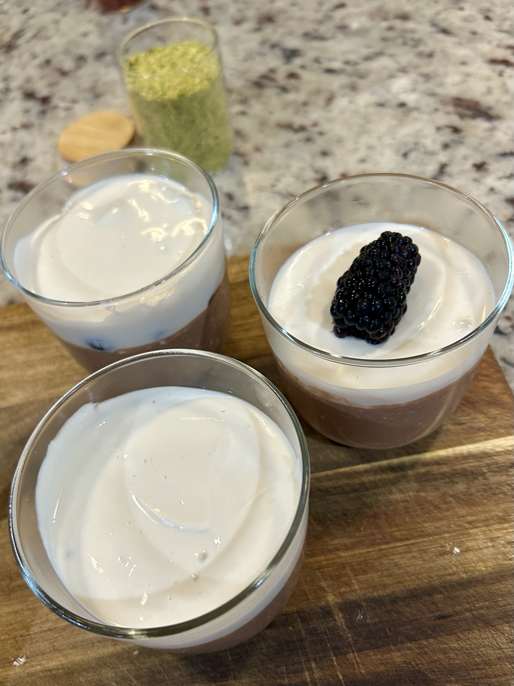
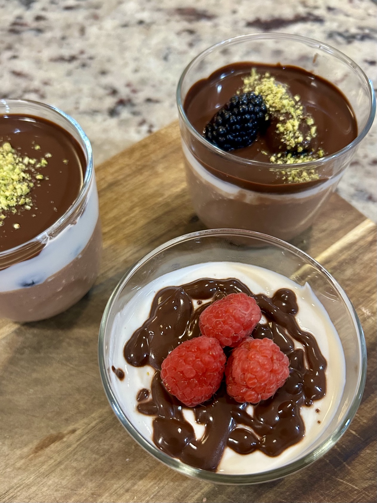
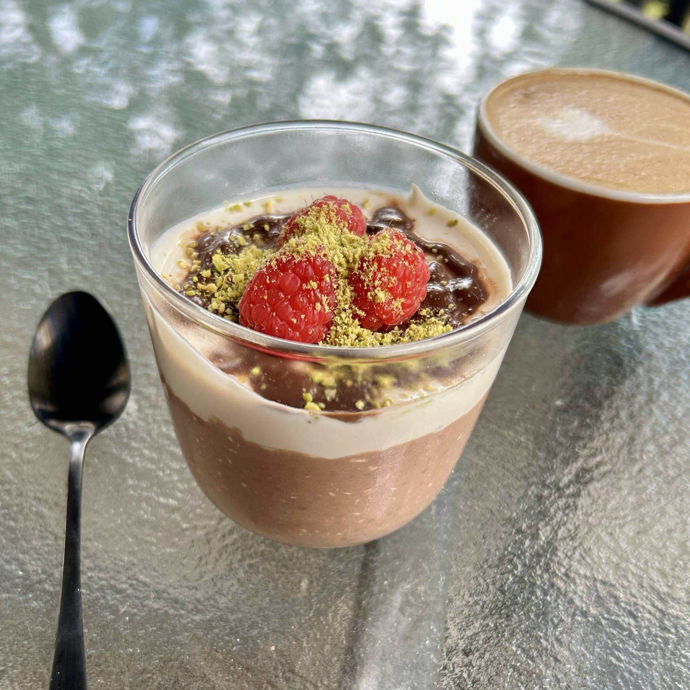
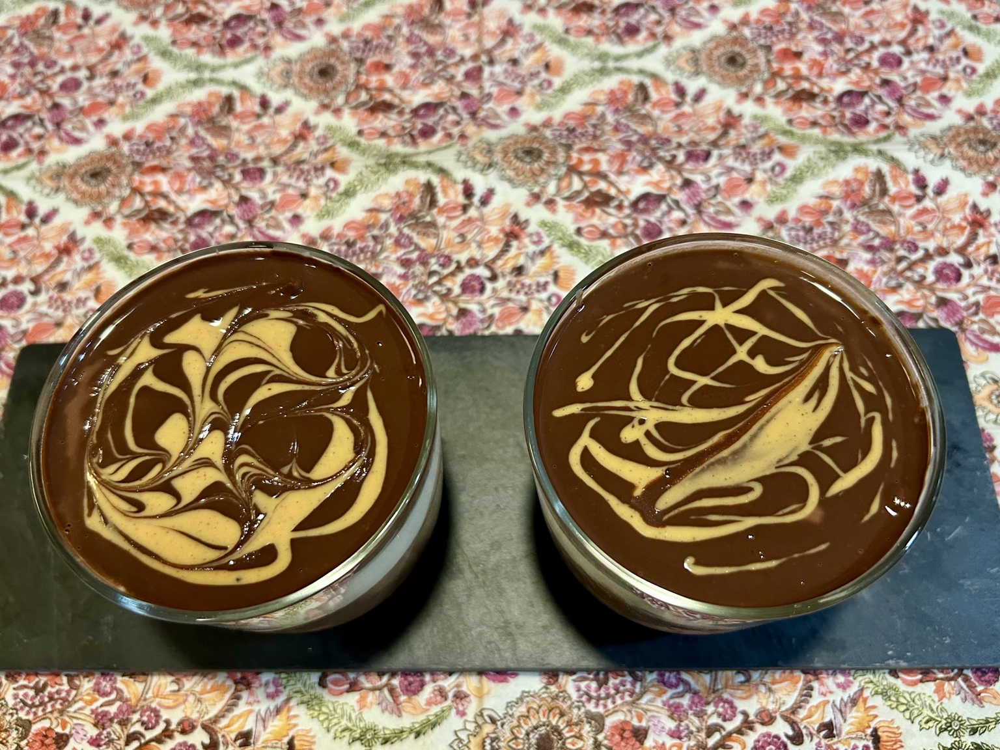

Breakfast / Dessert
Chia Choc Pudding Cups
A thick chocolate oat–chia pudding under a cool maple-butter Greek-yoghurt layer and a thin shell of dark chocolate. The base stays the same; the top is where the cups become individual projects — berries, pistachios, peanut butter, or whatever feels sufficiently excessive that day.





Chocolate oat–chia base
- 320 g plain 0% Greek yoghurt
- 240 ml skim milk (1 cup)
- 30 g oat flour
- 24 g chia seeds
- 24 g unsweetened cacao powder
- 18 g maple butter
- 1 tbsp vanilla extract, or to taste
- Pinch of salt
Maple-yoghurt layer
- 150 g plain 0% Greek yoghurt
- 15 g maple butter
- 1 tsp vanilla extract
Dark-chocolate top
- 30 g dark chocolate, about 10 g per cup
- 1 tbsp skim milk or water
Method
- Whisk the skim milk, oat flour, cacao, chia seeds and salt together. Heat gently for 2–3 minutes, stirring, until the mixture begins to simmer and thicken.
- Stir in the maple butter. Let the mixture cool until warm, then mix in the Greek yoghurt and vanilla until smooth.
- Divide among three glasses and let the chocolate layer settle and thicken. Refrigerate ideally overnight to set.
- Mix the Greek yoghurt, maple butter, and vanilla for the pale layer. Spoon about one third over each cup. A nice option is to add some fresh fruit, e.g. blueberries on top of the chia pudding before this layer goes in.
- Melt the dark chocolate gently (in a warm water bath) and spread about one third over each cup in a thin layer. Add skim or water as need for desired consistency.
- Chill until the layers are set, then finish each cup however you like.
Shortcut method
For an easier one-bowl base, gently microwave the milk with the oat flour, cacao, chia, maple butter, and salt, stirring between short bursts, until it just begins to simmer and thicken. Mix in the Greek yoghurt and vanilla, then let it rest before assembling the cups.
Toppings
These are meant to be robust rather than decorative. Fresh raspberries or blackberries cut through the chocolate; pistachio dust gives crunch and colour; peanut butter can be drizzled over the set chocolate or swirled directly into it. Combinations are encouraged.
Notes
Keep the dark-chocolate layer thin enough to crack easily with a spoon. The contrast is the point: dense chocolate chia underneath, cool tangy maple yoghurt in the middle, a crisp chocolate top, and something fresh, nutty, or both on top.